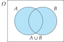
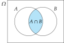
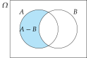
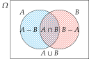
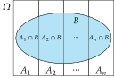

Probability Descriptive Statistics provides methods to describe the variables measured in the sample and their relations, but it does not allow to draw any conclusion about the population. Now it is time to take the leap from the sample to the population and the bridge for that is Probability Theory. Remember that the sample has a limited information about the population, and in order to draw valid conclusions for the population the sample must be representative of it. For that reason, to guarantee the representativeness of the sample, this must be drawn randomly. This means that the choice of individuals in the sample is by chance. Probability Theory will provide us the tools to control the random in the sampling and to determine the level of reliability of the conclusions drawn from the sample. Random experiments and events Random experiments The study of a characteristic of the population is conducted through random experiments. Definition - Random experiment. A random experiment is an experiment that meets two conditions: The set of possible outcomes is known. It is impossible to predict the outcome with absolute certainty. Example. Gambling are typical examples of random experiments. The roll of a dice, for example, is a random experiment because It is known the set of possible outcomes: $\{1,2,3,4,5,6\}$. Before rolling the dice, it is impossible to predict with absolute certainty the outcome. Another non-gambling example is the random choice of an individual of a human population and the determination of its blood type. Generally, the draw of a sample by a random method is an random experiment. Sample space Definition - Sample space. The set $\Omega$ of the possible outcomes of a random experiment is known as the sample space. Example. Some examples of sample spaces are: For the toss of a coin $\Omega=\{\mbox{heads},\mbox{tails}\}$. For the roll of a dice $\Omega=\{1,2,3,4,5,6\}$. For the blood type of an individual drawn by chance $\Omega=\{\mbox{A},\mbox{B},\mbox{AB},\mbox{0}\}$. For the height of an individual drawn by chance $\Omega=\mathbb{R}^+$. Tree diagrams In experiments where more than one variable is measured, the determination of the sample space can be difficult. In such a cases, it is advisable to use a tree diagram to construct the sample space. In a tree diagram every variable is represented in a level of the tree and every possible outcome of the variable as a branch. Example. The tree diagram below represents the sample space of a random experiment where the gender and the blood type is measured in a random individual. Random events Definition - Random event. A random event is any subset of the sample space $\Omega$ of a random experiment. There are different types of events: Impossible event: Is the event with no elements $\emptyset$. It has no chance of occurring. Elemental events: Are events with only one element, that is, a singleton. Composed events: Are events with two or more elements. Sure event: Is the event that contains the whole sample space $\Omega$. It always happens. Set theory Event space Definition - Event space. Given a sample space $\Omega$ of a random experiment, the event space of $\Omega$ is the set of all possible events of $\Omega$, and is noted $\mathcal{P}(\Omega).$ Example. Given the sample space $\Omega=\{a,b,c\}$, its even space is $$\mathcal{P}(\Omega)=\{\emptyset, {a},{b},{c},{a,b},{a,c},{b,c},{a,b,c}\}$$ As events are subsets of the sample space, using the set theory we have the following operations on events: Union Intersection Complement Difference Union of events Definition - Union event. Given two events $A,B\subseteq \Omega$, the union of $A$ and $B$, denoted by $A\cup B$, is the event of all elements that are members of $A$ or $B$ or both. $$A\cup B = \{x\,|\, x\in A\textrm{ or }x\in B\}.$$  The union event $A\cup B$ happens when $A$ or $B$ happen. Intersection of events Definition - Intersection event. Given two events $A,B\subseteq \Omega$, the intersection of $A$ and $B$, denoted by $A\cap B$, is the event of all elements that are members of both $A$ and $B$. $$A\cap B = \{x\,|\, x\in A\textrm{ and }x\in B\}.$$  The intersection event $A\cap B$ happens when $A$ and $B$ happen. Two events are incompatible if their intersection is empty. Complement of an event Definition - Complementary event. Given an event $A\subseteq \Omega$, the complementary or contrary event of $A$, denoted by $\bar A$, is the event of all elements of $\Omega$ except the elements that are members of $A$. $$\bar A = \{x\,|\, x\not\in A\}.$$ The complementary event $\bar A$ happens when $A$ does not happen. Difference of events Definition - Difference event. Given two events $A,B\subseteq \Omega$, the difference of $A$ and $B$, denoted by $A-B$, is the event of all elements that are members of $A$ but not are members of $B$. $$A-B = \{x\,|\, x\in A\textrm{ and }x\not\in B\} = A \cap \bar B.$$  The difference event $A-B$ happens when $A$ happens but $B$ does not. Example. Given the sample space of rolling a dice $\Omega=\{1,2,3,4,5,6\}$ and the events $A=\{2,4,6\}$ and $B=\{1,2,3,4\}$, The union of $A$ and $B$ is $A\cup B=\{1,2,3,4,6\}$. The intersection of $A$ and $B$ is $A\cap B=\{2,4\}$. The complement of $A$ is $\bar A=\{1,3,5\}$. The events $A$ and $\bar A$ are incompatible. The difference of $A$ and $B$ is $A-B=\{6\}$, and the difference of $B$ and $A$ is $B-A=\{1,3\}$. Algebra of events Given the events $A,B,C\subseteq \Omega$, the following properties are meet. $A\cup A=A$, $\quad A\cap A=A$ (idempotency). $A\cup B=B\cup A$, $\quad A\cap B = B\cap A$ (commutative). $(A\cup B)\cup C = A\cup (B\cup C)$, $\quad (A\cap B)\cap C = A\cap (B\cap C)$ (associative). $(A\cup B)\cap C = (A\cap C)\cup (B\cap C)$, $\quad (A\cap B)\cup C = (A\cup C)\cap (B\cup C)$ (distributive). $A\cup \emptyset=A$, $\quad A\cap \Omega=A$ (neutral element). $A\cup \Omega=\Omega$, $\quad A\cap \emptyset=\emptyset$ (absorbing element). $A\cup \overline A = \Omega$, $\quad A\cap \overline A= \emptyset$ (complementary symmetric element). $\overline{\overline A} = A$ (double contrary). $\overline{A\cup B} = \overline A\cap \overline B$, $\quad \overline{A\cap B} = \overline A\cup \overline B$ (Morgan’s laws). $A\cap B\subseteq A\cup B$. Probability definition Classical definition of probability Definition - Probability (Laplace). Given a sample space $\Omega$ of a random experiment where all elements of $\Omega$ are equally likely, the probability of an event $A\subseteq \Omega$ is the quotient between the number of elements of $A$ and the number of elements of $\Omega$ $$P(A) = \frac{|A|}{|\Omega|} = \frac{\mbox{number of favorable outcomes}}{\mbox{number of possible outcomes}}$$ This definition is well known, but it has important restrictions: It is required that all the elements of the sample space are equally likely (equiprobability). It can not be used with infinite sample spaces. Example. Given the sample space of rolling a dice $\Omega=\{1,2,3,4,5,6\}$ and the event $A=\{2,4,6\}$, the probability of $A$ is $$P(A) = \frac{|A|}{|\Omega|} = \frac{3}{6} = 0.5.$$ However, given the sample space of the blood type of a random individual $\Omega=\{O,A,B,AB\}$, it is not possible to use the classical definition to compute the probability of having group $A$, $$P(A) \neq \frac{|A|}{|\Omega|} = \frac{1}{4} = 0.25,$$ because the blood types are not equally likely in human populations. Frequency definition of probability Theorem - Law of large numbers. When a random experiment is repeated a large number of times, the relative frequency of an event tends to the probability of the event. The following definition of probability uses this theorem. Definition - Frequency probability. Given a sample space $\Omega$ of a replicable random experiment, the probability of an event $A\subseteq \Omega$ is the relative frequency of the event $A$ in an infinite number of repetitions of the experiment $$P(A) = lim_{n\rightarrow \infty}\frac{n_A}{n}$$ Although frequency probability avoid the restrictions of classical definition, it also have some drawbacks: It computes an estimation of the real probability (more accurate the higher the sample size). The repetition of the experiment must be in identical conditions. Example. Given the sample space of tossing a coin $\Omega=\{H,T\}$, if after tossing the coin 100 times we got 54 heads, then the probability of $H$ is $$P(H) = \frac{n_H}{n} = \frac{54}{100} = 0.54.$$ Given the sample space of the blood type of a random individual $\Omega=\{O,A,B,AB\}$, if after drawing a random sample of 1000 persons we got 412 with blood type $A$, then the probability of $A$ is $$P(A) = \frac{n_A}{n} = \frac{412}{1000} = 0.412.$$ Axiomatic definition of probability Definition - Probability (Kolmogórov). Given a sample space $\Omega$ of a random experiment, a probability function is a function that maps every event $A\subseteq \Omega$ a real number $P(A)$, known as the probability of $A$, that meets the following axioms: The probability of any event is nonnegative, $$P(A)\geq 0.$$ The probability of the sure event is 1, $$P(\Omega)=1$$ The probability of the union of two incompatible events ($A\cap B=\emptyset$) is the sum of their probabilities $$P(A\cup B) = P(A)+P(B).$$ From the previous axioms is possible to deduce some important properties of a probability function. Given a sample space $\Omega$ of a random experiment and the events $A,B\subseteq \Omega$, the following properties are meet: $P(\bar A) = 1-P(A)$. $P(\emptyset)= 0$. If $A\subseteq B$ then $P(A)\leq P(B)$. $P(A) \leq 1$. This means that $P(A)\in [0,1]$. $P(A-B)=P(A)-P(A\cap B)$. $P(A\cup B)= P(A) + P(B) - P(A\cap B)$. If $A=\{e_1,\ldots,e_n\}$, where $e_i$ $i=1,\ldots,n$ are elemental events, then $$P(A)=\sum_{i=1}^n P(e_i).$$ Proof $\bar A = \Omega \Rightarrow P(A\cup \bar A) = P(\Omega) \Rightarrow P(A)+P(\bar A) = 1 \Rightarrow P(\bar A)=1-P(A)$. $\emptyset = \bar \Omega \Rightarrow P(\emptyset) = P(\bar \Omega) = 1-P(\Omega) = 1-1 = 0.$ $B = A\cup (B-A)$. As $A$ and $B-A$ are incompatible, $P(B) = P(A\cup (B-A)) = P(A)+P(B-A) \geq P(A).$ If we think of probabilities as areas, it is easy to see graphically, $A\subseteq \Omega \Rightarrow P(A)\leq P(\Omega)=1.$ $A=(A-B)\cup (A\cap B)$. As $A-B$ and $A\cap B$ are incompatible, $P(A)=P(A-B)+P(A\cap B) \Rightarrow P(A-B)=P(A)-P(A\cap B)$. If we think of probabilities as areas, it is easy to see graphically, $A\cup B= (A-B) \cup (B-A) \cup (A\cap B)$. As $A-B$, $B-A$ and $A\cap B$ are incompatible, $P(A\cup B)=P(A-B)+P(B-A)+P(A\cap B) =P(A)-P(A\cap B)+P(B)-P(A\cap B)+P(A\cap B)$ $=P(A)+P(B)-P(A\cup B)$. If we think again of probabilities as areas, it is easy to see graphically because the area of $A\cap B$ is added twice (one for $A$ and other for $), so it must be subtracted once.  $A=\{e_1,\cdots,e_n\} = \{e_1\}\cup \cdots \cup \{e_n\} \Rightarrow P(A)=P(\{e_1\}\cup \cdots \cup \{e_n\}) = P(\{e_1\})+ \cdots P(\{e_n\}).$ Probability interpretation As set by the previous axioms, the probability of an event $A$, is a real number $P(A)$ that always ranges from 0 to 1. In a certain way, this number expresses the plausibility of the event, that is, the chances that the event $A$ occurs in the experiment. Therefore, it also gives a measure of the uncertainty about the event. The maximum uncertainty correspond to probability $P(A)=0.5$ ($A$ and $\bar A$ have the same chances of happening). The minimum uncertainty correspond to probability $P(A)=1$ ($A$ will happen with absolute certainty) and $P(A)=0$ ($A$ won’t happen with absolute certainty) When $P(A)$ is closer to 0 than to 1, the chances of not happening $A$ are greater than the chances of happening $A$. On the contrary, when $P(A)$ is closer to 1 than to 0, the chances of happening $A$ are greater than the chances of not happening $A$. Conditional probability Conditional experiments Occasionally, we can get some information about the experiment before its realization. Usually that information is given as an event $B$ of the same sample space that we know that is true before we conduct the experiment. In such a case, we will say that $B$ is a conditioning event and the probability of another event $A$ is known as a conditional probability and expressed $P(A\vert B)$. This must be read as probability of $A$ given $B$ or probability of $A$ under the condition $B$. Usually, conditioning events change the sample space and therefore the probabilities of events. Example. Assume that we have a sample of 100 women and 100 men with the following frequencies $$ \begin{array}{|c|c|c|} \hline & \mbox{Non-smokers} & \mbox{Smokers} \newline \hline \mbox{Females} & 80 & 20 \newline \hline \mbox{Males} & 60 & 40 \newline \hline \end{array} $$ Then, using the frequency definition of probability, the $$P(\mbox{Smoker})= \frac{60}{200}=0.3.$$ However, if we know that the person is a woman, then the sample is reduced to the first row, and the probability of being smoker is $$P(\mbox{Smoker}\mid\mbox{Female})=\frac{20}{100}=0.2.$$ Conditional probability Definition - Conditional probability Given a sample space $\Omega$ of a random experiment, and two events $A,B\subseteq \Omega$, the probability of $A$ conditional on $B$ occurring is $$P(A|B) = \frac{P(A\cap B)}{P(B)},$$as long as, $P(B)\neq 0$. This definition allows to calculate conditional probabilities without changing the original sample space. Example. In the previous example $$P(\mbox{Smoker}\mid\mbox{Female})= \frac{P(\mbox{Smoker}\cap \mbox{Female})}{P(\mbox{Female})} = \frac{20/200}{100/200}=\frac{80}{100}=0.8.$$ Probability of the intersection event From the definition of conditional probability it is possible to derive the formula for the probability of the intersection of two events. $$P(A\cap B) = P(A)P(B|A) = P(B)P(A|B).$$ Example. In a population there are a 30% of smokers and we know that there are a 40% of smokers with breast cancer. The probability of a random person being smoker and having breast cancer is $$P(\mbox{Smoker}\cap \mbox{Cancer})= P(\mbox{Smoker})P(\mbox{Cancer}\mid\mbox{Smoker}) = 0.3\times 0.4 = 0.12.$$ Independence of events Sometimes, the probability of the conditioning event does not change the original probability of the main event. Definition - Independent events. Given a sample space $\Omega$ of a random experiment, two events $A,B\subseteq \Omega$ are independents if the probability of $A$ does not change when conditioning on $B$, and vice-versa, that is, $$P(A|B) = P(A) \quad \mbox{and} \quad P(B|A)=P(B),$$ if $P(A)\neq 0$ and $P(B)\neq 0$. This means that the occurrence of one event does not give relevant information to change the uncertainty of the other. When two events are independent, the probability of the intersection of them is equal to the product of their probabilities, $$P(A\cap B) = P(A)P(B).$$ Example. The sample space of tossing twice a coin is $\Omega=\{(H,H),(H,T),(T,H),(T,T)\}$ and all the elements are equiprobable if the coin is fair. Thus, applying the classical definition of probability we have $$P((H,H)) = \frac{1}{4} = 0.25.$$ If we name $H_1={(H,H),(H,T)}$, that is, having heads in the first toss, and $H_2=\{(H,H),(T,H)\}$, that is, having heads in the second toss, we can get the same result assuming that these events are independent, $$P(H,H)= P(H_1\cap H_2) = P(H_1)P(H_2) = \frac{2}{4}\frac{2}{4}=\frac{1}{4}=0.25.$$ Probability Space Definition - Probability space. A probability space of a random experiment is a triplet $(\Omega,\mathcal{F},P)$ where $\Omega$ is the sample space of the experiment. $\mathcal{F}$ is a set of events of the experiment. $P$ is a probability function. If we know the probabilities of all the elements of $\Omega$, then we can calculate the probability of every event in $\mathcal{F}$ and we can construct easily the probability space. Probability space construction In order to determine the probability of every elemental event we can use a tree diagram, using the following rules: For every node of the tree, label the incoming edge with the probability of the variable in that level having the value of the node, conditioned by events corresponding to its ancestor nodes in the tree. The probability of every elemental event in the leaves is the product of the probabilities on edges that go form the root to the leave. Probability tree with dependent variables In a probability tree with dependent variables, the probababilities of every level of the tree are different depending on the outcome of the previous leves. Example. In a population there are a 30% of smokers and we know that there are a 40% of smokers with breast cancer, while only 10% of non-smokers have breast cancer. The probability tree of the probability space of the random experiment consisting of picking a random person and measuring the variables smoking and breast cancer is shown below. Probability tree with independent variables In a probability tree with independent variables, the probabilities of every level of the tree are the same no matter the outcome of the previous leves. Example. The probability tree of the random experiment of tossing two coins is shown below. Example. In a population there are 40% of males and 60% of females, the probability tree of drawing a random sample of three persons is shown below. Total probability theorem Partition of the sample space Definition - Partition of the sample space. A collection of events $A_1,A_2,\ldots,A_n$ of the same sample space $\Omega$ is a partition of the sample space if it satisfies the following conditions The union of the events is the sample space, that is, $A_1\cup \cdots\cup A_n =\Omega$. All the events are mutually incompatible, that is, $A_i\cap A_j = \emptyset$ $\forall i\neq j$. Usually it is easy to get a partition of the sample space splitting a population according to some categorical variable, like for example gender, blood type, etc. Total probability theorem If we have a partition of a sample space, we can use it to calculate the probabilities of other events in the same sample space. Theorem - Total probability. Given a partition $A_1,\ldots,A_n$ of a sample space $\Omega$, the probability of any other event $B$ of the same sample space can be calculated with the formula $$P(B) = \sum_{i=1}^n P(A_i\cap B) = \sum_{i=1}^n P(A_i)P(B|A_i).$$ Proof The proof of the theorem is quite simple. As $A_1,\ldots,A_n$ is a partition of $\Omega$, we have $$B = B\cap \Omega = B\cap (A_1\cup \cdots \cup A_n) = (B\cap A_1)\cup \cdots \cup (B\cap A_n).$$ And all the events of this union are mutually incompatible as $A_1,\ldots,A_n$ are, thus $$ \begin{aligned} P(B) &= P((B\cap A_1)\cup \cdots \cup (B\cap A_n)) = P(B\cap A_1)+\cdots + P(B\cap A_n) =\newline &= P(A_1)P(B|A_1)+\cdots + P(A_n)P(B|A_n) = \sum_{i=1}^n P(A_i)P(B|A_i). \end{aligned} $$  Example. A symptom $S$ can be caused by a disease $D$, but it can also be present in persons without the disease. In a population, the rate of people with the disease is $0.2$. We know also that $90%$ of persons with the disease have the symptom, while only $40%$ of persons without the disease have it. What is the probability that a random person of the population has the symptom? To answer the question we can apply the total probability theorem using the partition $\{A,\bar A\}$: $$P(S) = P(D)P(S|D)+P(\bar D)P(S|\bar D) = 0.2\cdot 0.9 + 0.8\cdot 0.4 = 0.5.$$ That is, half of the population has the symptom. Indeed, it is a weighted mean of probabilities! The answer to the previous question is even clearer with the tree diagram of the probability space. $$ \begin{aligned} P(S) &= P(D,S) + P(\bar D,S) = P(D)P(S|D)+P(\bar D)P(S|\bar D)\newline & = 0.2\cdot 0.9+ 0.8\cdot 0.4 = 0.18 + 0.32 = 0.5. \end{aligned} $$ Bayes theorem A partition of a sample space $A_1,\cdots,A_n$ may also be interpreted as a set of feasible hypothesis for a fact $B$. In such cases it may be helpful to calculate the posterior probability $P(A_i\vert B)$ of every hypothesis. Definition - Bayes. Given a partition $A_1,\ldots,A_n$ of a sample space $\Omega$ and another event $B$ of the same sample space, the conditional probability of every even $A_i$ $i=1,\ldots,n$ on $B$ can be calculated with the following formula $$P(A_i|B) = \frac{P(A_i\cap B)}{P(B)} = \frac{P(A_i)P(B|A_i)}{\sum_{i=1}^n P(A_i)P(B|A_i)}.$$ Example. In the previous example, a more interesting question is about the diagnosis for a person with the symptom. In this case we can interpret $D$ and $\overline{D}$ as the two feasible hypothesis for the symptom $S$. The prior probabilities for them are $P(D)=0.2$ and $P(\overline{D})=0.8$. That means that if we do not have information about the symptom, the diagnosis would be that the person does not have the disease. However, if after examining the person we observe the symptom, that information changes the uncertainty about the hypothesis, and we need calculate the posterior probabilities to diagnose, that is, $P(D\vert S)$ and $P(\overline{D}\vert S)$. To calculate the posterior probabilities we can use the Bayes theorem. $$ \begin{aligned} P(D|S) &= \frac{P(D)P(S|D)}{P(D)P(S|D)+P(\overline{D})P(S|\overline{D})} = \frac{0.2\cdot 0.9}{0.2\cdot 0.9 + 0.8\cdot 0.4} = \frac{0.18}{0.5}=0.36,\newline P(\overline{D}|S) &= \frac{P(\overline{D})P(S|\overline{D})}{P(D)P(S|D)+P(\overline{D})P(S|\overline{D})} = \frac{0.8\cdot 0.4}{0.2\cdot 0.9 + 0.8\cdot 0.4} = \frac{0.32}{0.5}=0.64. \end{aligned} $$ As we can see the probability of having the disease has increased. Nevertheless, the probability of not having the disease is still greater than the probability of having it, and for that reason, the diagnosis is not having the disease. In this case it is said the the symptom $S$ is not decisive in order to diagnose the disease. Epidemiology One of the branches of Medicine that makes an intensive use of probability is , that study the distribution and causes of diseases in populations identifying risk factors for disease and targets for preventive healthcare. In Epidemiology we are interested in how often appears an event or medical event $D$ (typically a disease like flu, a risk factor like smoking or a protection factor like a vaccine) that is measured as a nominal variable with two categories (occurrence or not of the event). There are different measures related to the frequency of a medical event. The most important are: Prevalence Incidence Relative risk Odds ratio Prevalence Definition - Prevalence. The prevalence of a medical event $D$ is the proportion of a particular population that is affected by a medical event. $$\mbox{Prevalence}(D) = \frac{\mbox{Num people affected by $D$}}{\mbox{Population size}}$$ Often, the prevalence is estimated from a sample as the relative frequency of people affected by the event in the sample. It is also common to express that frequency as a percentage. Example. To estimate the prevalence of flu a sample of 1000 persons has been studied and 150 of them had flu. Thus, the prevalence of flu is approximately 150/1000=0.15, that is, a 15%. Incidence Incidence measures the probability of occurrence of a medical event in a population within a given period of time. Incidence can be measured as a cumulative proportion or as a rate. Definition - Cumulative incidence. The cumulative incidence of a medical event $D$ is the proportion of people that experience the event in a period of time, that is, the number of new cases with the event in the period of time divided by the size of the population at risk. $$R(D)=\frac{\mbox{Num of new cases with $D$}}{\mbox{Population at risk size}}$$ Example. A population initially contains 1000 persons without flu and after two years of observation 160 of them got the flu. The incidence proportion of flu is 160 cases per 1000 persons per two years, i.e. 16% per two years. Incidence rate or Absolute risk Definition - Incidence rate. The incidence rate or absolute risk of a medical event $D$ is the number of new cases with the event divided by the size of the population at risk and by the number of units of time in a given period. $$R(D)=\frac{\mbox{Num of new cases with $D$}}{\mbox{Population at risk size}\times \mbox{Num of unit time intervals}}$$ Example. A population initially contains $1000$ persons without flu and after two years of observation 160 of them got the flu. If we consider the year as the unit of time, the incidence rate of flu is 160 cases per $1000$ persons divided by two years, i.e. 80 cases per 1000 persons-year or 8% persons per year. Prevalence vs Incidence Prevalence must not be confused with incidence. Prevalence indicates how widespread the medical event is, and is more a measure of the burden of the event on society with no regard to time at risk or when subjects may have been exposed to a possible risk factor, whereas incidence conveys information about the risk of being affected by the event. Prevalence can be measured in cross-sectional studies at a particular time, while in order to measure incidence we need a longitudinal study observing the individuals during a period of time. Incidence is usually more useful than prevalence in understanding the event etiology: for example, if the incidence of a disease in a population increases, then there is a risk factor that promotes it. When the incidence is approximately constant for the duration of the event, prevalence is approximately the product of event incidence and average event duration, so $$\mbox{prevalence} = \mbox{incidence} \times \mbox{duration}$$ Comparing risks In order to determine if a factor or characteristic is associated with the medical event we need to compare the risk of the medical event in two populations, one exposed to the factor and the other not exposed. The group of people exposed to the factor is known as the treatment group or experimental group and the group of people unexposed as the control group. Usually the cases observed for each group are represented in a 2$\times$2 table like the one below. Event $D$ No event $\overline D$ Treatment group (exposed) $a$ $b$ Control group(unexposed) $c$ $d$ Attributable risk or Risk difference $RD$ Definition - Attributable risk. The attributable risk or risk difference of a medical event $D$ for people exposed to a factor is the difference between the absolute risks of the treatment group and the control group. $$\begin{aligned}RD(D) &= \mbox{Risk in treatment group}-\mbox{Risk in control group}=\newline &= R_T(D)-R_C(D)=\frac{a}{a+b}-\frac{c}{c+d}. \end{aligned} $$ The attributable risk is the risk of an event that is specifically due to the factor of interest. Observe that the attributable risk can be positive, when the risk of the treatment group is greater than the risk of the control group, and negative, on the contrary. Example. To determine the effectiveness of a vaccine against the flu, a sample of 1000 person without flu was selected at the beginning of the year. Half of them were vaccinated (treatment group) and the other received a placebo (control group). The table below summarize the results at the end of the year. Flu $D$ No flu $\overline D$ Treatment group(vaccinated) 20 480 Control group(Unvaccinated) 80 420 The attributable risk of getting the flu for people vaccinated is $$AR(D) = \frac{20}{20+480}-\frac{80}{80+420} = -0.12.$$ This means that the risk of getting flu in vaccinated people is a 12% less than in unvaccinated. Relative risk $RR$ Definition - Relative risk. The relative risk of a medical event $D$ for people exposed to a factor is the quotient between the proportions of people that acquired the event in a period of time in the treatment and control groups. That is, the quotient between the incidences of the treatment and the control groups. $$RR(D)=\frac{\mbox{Risk in treatment group}}{\mbox{Risk in control group}}=\frac{R_1(D)}{R_0(D)}=\frac{a/(a+b)}{c/(c+d)}$$ Relative risk compares the risk of a medical event between the treatment and the control groups. $RR=1$ $\Rightarrow$ There is no association between the event and the exposure to the factor. $RR<1$ $\Rightarrow$ Exposure to the factor decreases the risk of the event. $RR>1$ $\Rightarrow$ Exposure to the factor increases the risk of the event. The further from 1, the stronger the association. Example. To determine the effectiveness of a vaccine against the flu, a sample of 1000 person without flu was selected at the beginning of the year. Half of them were vaccinated (treatment group) and the other received a placebo (control group). The table below summarize the results at the end of the year. Flu $D$ No flu $\overline D$ Treatment group(vaccinated) 20 480 Control group(Unvaccinated) 80 420 The relative risk of getting the flu for people vaccinated is $$RR(D) = \frac{20/(20+480)}{80/(80+420)} = 0.25.$$ This means that vaccinated people were only one-fourth as likely to develop flu as were unvaccinated people, i.e. the vaccine reduce the risk of flu by 75%. Odds An alternative way of measuring the risk of a medical event is the odds. Definition - Odds. The odds of a medical event $D$ in a population is the quotient between the people that acquired the event and people that not in a period of time. Unlike incidence or absolute risk, that is a proportion less than 1, the odds can be greater than 1. However, it is possible to convert an odd into a probability with the formula $$P(D) = \frac{\mbox{ODDS}(D)}{\mbox{ODDS}(D)+1}$$ Example. A population initially contains $1000$ persons without flu and after a year 160 of them got the flu. The odds of flu is 160/840. Observe that the incidence is 160/1000. Odds ratio $OR$ Definition - Odds ratio. The odds ratio of a medical event $D$ for people exposed to a factor is the quotient between the odds of people that acquired the event in a period of time in the treatment and control groups. $$OR(D)=\frac{\mbox{Odds in treatment group}}{\mbox{Odds in control group}}=\frac{a/b}{c/d}=\frac{ad}{bc}$$ Odds ratio compares the odds of a medical event between the treatment and the control groups. The interpretation is similar to the relative risk. $OR=1$ $\Rightarrow$ There is no association between the event and the exposure to the factor. $OR<1$ $\Rightarrow$ Exposure to the factor decreases the risk of the event. $OR>1$ $\Rightarrow$ Exposure to the factor increases the risk of the event. The further from 1, the stronger the association. Example. To determine the effectiveness of a vaccine against the flu, a sample of 1000 person without flu was selected at the beginning of the year. Half of them were vaccinated (treatment group) and the other received a placebo (control group). The table below summarize the results at the end of the year. Flu $D$ No flu $\overline D$ Treatment group(vaccinated) 20 480 Control group(Unvaccinated) 80 420 The odds ratio of getting the flu for people vaccinated is $$OR(D) = \frac{20/480}{80/420} = 0.21875.$$ This means that the odds of getting the flu versus not getting the flu in vaccinated individuals is almost one fifth of that in unvaccinated, i.e. approximately for every 22 persons vaccinated with flu there will be 100 persons unvaccinated with flu. Relative risk vs Odds ratio Relative risk and odds ratio are two measures of association but their interpretation is slightly different. While the relative risk expresses a comparison of risks between the treatment and control groups, the odds ratio expresses a comparison of odds, that is not the same than the risk. Thus, an odds ratio of 2 does not mean that the treatment group has the double of risk of acquire the medical event. The interpretation of the odds ratio is trickier because is counterfactual, and give us how many times is more frequent the event in the treatment group in comparison with the control group, assuming that in the control group the event is as frequent as the non-event. The advantage of the odds ratio is that it does not depend on the prevalence or the incidence of the event, and must be used necessarily when the number of people with the medical event is selected arbitrarily in both groups, like in the case-control studies. Example. In order to determine the association between lung cancer and smoking two samples were selected (the second one with the double of non-cancer individuals) getting the following results: Sample 1 Cancer No cancer Smokers 60 80 Non-smokers 40 320 $$ \begin{aligned} RR(D) &= \frac{60/(60+80)}{40/(40+320)} = 3.86.\newline OR(D) &= \frac{60/80}{40/320} = 6. \end{aligned} $$ Sample 2 Cancer No cancer Smokers 60 160 Non-smokers 40 640 $$ \begin{aligned} RR(D) &= \frac{60/(60+160)}{40/(40+640)} = 4.64.\newline OR(D) &= \frac{60/160}{40/640} = 6. \end{aligned} $$ Thus, when we change the incidence or the prevalence of the event (lung cancer) the relative risk changes, while the odds ratio not. The relation between the relative risk and the odds ratio is given by the following formula $$RR = \frac{OR}{1-R_0+R_0OR} = OR\frac{1-R_1}{1-R_0},$$ where $R_0$ and $R_1$ are the prevalence or the incidence in control and treatment groups respectively. The odds ratio always overestimate the relative risk when it is greater than 1 and underestimate it when it is less than 1. However, with rare medical events (with very small prevalence or incidence) the relative risk and the odds ratio are almost the same. Diagnostic tests In Epidemiology it is common to use diagnostic test to diagnose diseases. In general, diagnostic tests are not fully reliable and have some risk of misdiagnosis as it is represented in the table below. $$ \begin{array}{|l|c|c|} \hline & \mbox{Presence of disease }D & \mbox{Absence of disease }\bar D\newline \hline \mbox{Test outcome positive } + & \color{green}{ \mbox{True Positive } TP} & \color{red}{\mbox{False Positive } FP}\newline \hline \mbox{Test outcome negative } - & \color{red}{\mbox{False Negative } FN} & \color{green}{\mbox{True Negative } TN}\newline \hline \end{array} $$ Sensitivity and specificity of a diagnostic test The performance of a diagnostic test depends on the following two probabilities. Definition - Sensitivity. The sensitivity of a diagnostic test is the proportion of positive outcomes in persons with the disease$$P(+|D)=\frac{TP}{TP+FN}$$ Definition - Specificity. The specificity of a diagnostic test is the proportion of negative outcomes in persons without the disease$$P(-|\overline{D})=\frac{TN}{TN+FP}$$ Sensitivity and specificity interpretation Usually, there is a trade-off between sensitivity and specificity. A test with high sensitivity will detect the disease in most sick persons, but it will produce also more false positives than a less sensitive test. This way, a positive outcome in a test with high sensitivity is not useful for confirming the disease, but a negative outcome is useful for ruling out the disease, since it rarely misdiagnoses those who have the disease. On the other hand, a test with a high specificity will rule out the disease in most healthy persons, but it will produce also more false negatives than a less specific test. Thus, a negative outcome in a test with high specificity is not useful for ruling out the disease, but a positive is useful to confirm the disease, since it rarely give positive outcomes in healthy people. Deciding on a test with greater sensitivity or a test with greater specificity depends on the type of disease and the goal of the test. In general, we will use a sensitive test when: The disease is serious and it is important to dectect it. The disease is curable. The false positives do not provoke serious traumas. An we will use a specific test when: The disease is important but difficult or impossible to cure. The false positives provoke serious traumas. The treatment of false positives can have dangerous consequences. Predictive values of a diagnostic test But the most important aspect of a diagnostic test is its predictive power, that is measured with the following two posterior probabilities. Definition - Positive predictive value $PPV$. The positive predictive value of a diagnostic test is the proportion of persons with the disease to persons with a positive outcome$$P(D|+) = \frac{TP}{TP+FP}$$ Definition - Negative predictive value $NPV$. The negative predictive value of a diagnostic test is the proportion of persons without the disease to persons with a negative outcome$$P(\overline{D}|-) = \frac{TN}{TN+FN}$$ Positive and negative predictive values allow to confirm or to rule out the disease, respectively, if they reach at least a threshold of $0.5$. $$ \begin{array}{rcl} PPV>0.5 & \Rightarrow & \mbox{Disease diagnostic}\newline NPV>0.5 & \Rightarrow & \mbox{Not disease diagnostic} \end{array} $$ However, these probabilities depends on the proportion of persons with the disease in the population $P(D)$ that is known as of the disease. They can be calculated from the sensitivity and the specificity of the diagnostic test using the Bayes theorem. $$ \begin{aligned} PPV=P(D|+) &= \frac{P(D)P(+|D)}{P(D)P(+|D)+P(\overline{D})P(+|\overline{D})}\newline NPV=P(\overline{D}|-) &= \frac{P(\overline{D})P(-|\overline{D})}{P(D)P(-|D)+P(\overline{D})P(-|\overline{D})} \end{aligned} $$ Thus, with frequent diseases, the positive predictive value increases, and with rare diseases, the negative predictive value increases. Example. A diagnostic test for the flu has been tried in a random sample of 1000 persons. The results are summarized in the table below. $$ \begin{array}{|l|c|c|} \hline & \mbox{Presence of flu } D & \mbox{Absence of flu } \bar D\newline \hline \mbox{Test outcome } + & 95 & 90 \newline \hline \mbox{Test outcome }- & 5 & 810 \newline \hline \end{array} $$ According to this sample, the prevalence of the flu can be estimated as $$P(D) = \frac{95+5}{1000} = 0.1.$$ The sensitivity of this diagnostic test is $$P(+|D) = \frac{95}{95+5}= 0.95.$$ And the specificity is $$P(-|\overline{D}) = \frac{810}{90+810}=0.9.$$ The predictive positive value of the diagnostic test is $$PPV = P(D|+) = \frac{95}{95+90} = 0.5135.$$ As this value is over $0.5$, this means that we will diagnose the flu if the outcome of the test is positive. However, the confidence in the diagnostic will be low, as this value is pretty close to $0.5$. On the other hand, the predictive negative value is $$NPV = P(\overline{D}|-) = \frac{810}{5+810} = 0.9939.$$ As this value is almost 1, that means that is almost sure that a person does not have the flu if he or she gets a negative outcome in the test. Thus, this test is a powerful test to rule out the flu, but not so powerful to confirm it. Likelihood ratios of a diagnostic test The following measures are usually derived from sensitivity and specificity. Definition - Positive likelihood ratio $LR+$. The positive likelihood ratio of a diagnostic test is the ratio between the probability of positive outcomes in persons with the disease and healthy persons respectively, $$LR+=\frac{P(+|D)}{P(+|\overline{D})} = \frac{\mbox{Sensitivity}}{1-\mbox{Specificity}}$$ Definition - Negative likelihood ratio $LR-$. The negative likelihood ratio of a diagnostic test is the ratio between the probability of negative outcomes in persons with the disease and healthy persons respectively, $$LR-=\frac{P(-|D)}{P(-|\overline{D})} = \frac{1-\mbox{Sensitivity}}{\mbox{Specificity}}$$ Positive likelihood ratio can be interpreted as the number of times that a positive outcome is more probable in people with the disease than in people without it. On the other hand, negative likelihood ratio can be interpreted as the number of times that a negative outcome is more probable in people with the disease than in people without it. Post-test probabilities can be calculated from pre-test probabilities through likelihood ratios. $$P(D|+) = \frac{P(D)P(+|D)}{P(D)P(+|D)+P(\overline{D})P(+|\overline{D})} = \frac{P(D)LR+}{1-P(D)+P(D)LR+}$$ Thus, A likelihood ratio greater than 1 increases the probability of disease. A likelihood ratio less than 1 decreases the probability of disease. A likelihood ratio 1 does not change the pre-test probability. Statistics Biostatistics Descriptive-Statistics Previous Regression Next Discrete Random Variables